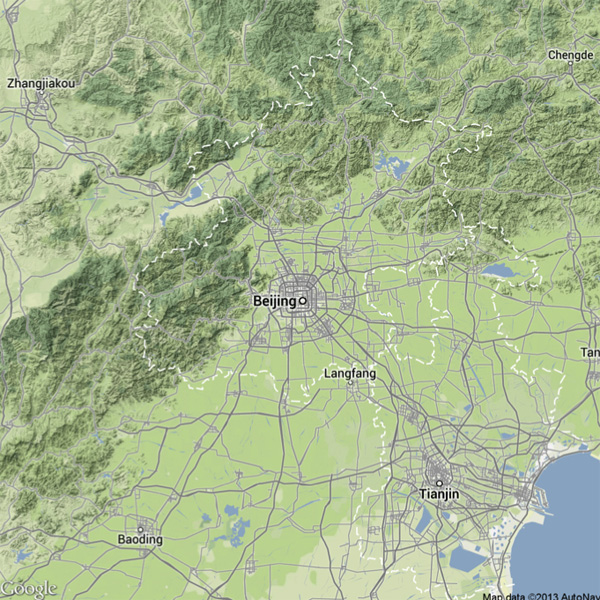
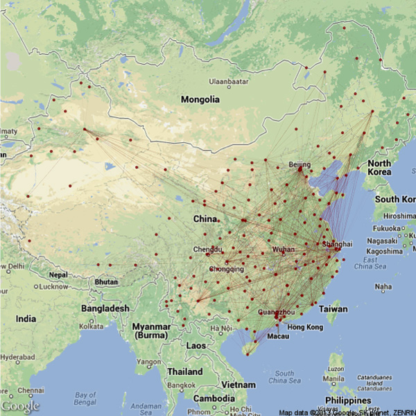

最近一直在想地图信息如何处理，问题有2个，一个是如何获取有坐标的数据信息（人口，经济指标，商铺位置等）。另一个就是如何将这些信息处理后在地图上表达。第一个问题在互联网时代不难得到，难的是获取高质量的数据。第二个问题理论上GIS类的软件都可以做到，但我对GIS一点都不了解。尝试过的ARCGIS体积大，还不支持OS X。
前几天无意中看到了几个R的library的介绍，发现原来用R也可以做GIS类的工作。而且开源软件以开放性吸引了许多优秀的作者写library，极大扩展了软件的使用方式。如果说建筑软件中RHINO是用插件武装起来的话，编程方面Python和R更是用开源包武装到了牙齿，可以正面去与商业软件PK。
对我最有用的地图library大概有这几个：
maps(内置了一些地图，但无中国）
mapdata(有中国地图，但比较老，重庆和四川还没分开）
如何搞定中国的地图请看：终于搞定了中国分省市地图，用R软件绘制中国分省市地图
有更好的办法么？特别是在Google Earth用途如此普遍的今天，能否调取Google的API，使用它们的地图数据呢？
答案是肯定的！David Kahle和Hadley Wickham制作了一个ggmap的包，解决了这个问题，极大便利了我等技术文盲。
我们可以试几个功能，更多的功能可以看看?ggmap，有些是需要配合其它的包一起使用。
geocode
geocode("China")
Information from URL : http://maps.googleapis.com/maps/api/geocode/json?address=China&sensor=false
Google Maps API Terms of Service : http://developers.google.com/maps/terms
lon lat
1 104.1954 35.86166
返回了中国的经纬度坐标。
mapdist
mapdist('Tsinghua University',
+ 'Beijing University', 'walking')
from to m km miles seconds
1 Tsinghua University Beijing University 3329 3.329 2.068641 2458
minutes hours
1 40.96667 0.6827778
从清华到北大竟然3.3公理，要41分钟，估计是从东门算的吧。
get_map
library(ggmap)
library(mapproj)
map <- get_map(location = 'Beijing', zoom = 8) #以北京为中心，zoom代表类似放大倍数，GOOGLE API好像对此有限制，待查

京津冀地区出现了。Google地图本身就是个大的GIS系统，如果在上面一行代码里加上 maptype = ‘roadmap’就可以得到北京的路网图。
map <- get_map(location = 'Beijing', zoom = 10, maptype = 'roadmap') #北京路网
更重要的是基于GOOGLE地图我们还可以叠加各种自己处理过的信息，比如很火的航班数据可视化，在Mapping the World’s Biggest Airlines里有详细描述，但不是基于Google地图。在中国国内航线信息的可视化中，有一个简化的作法。我也简单画了一个，有时间研究下那个比较FANCY的夜景航线图是怎么做出来的。

本文主要学习了博文：